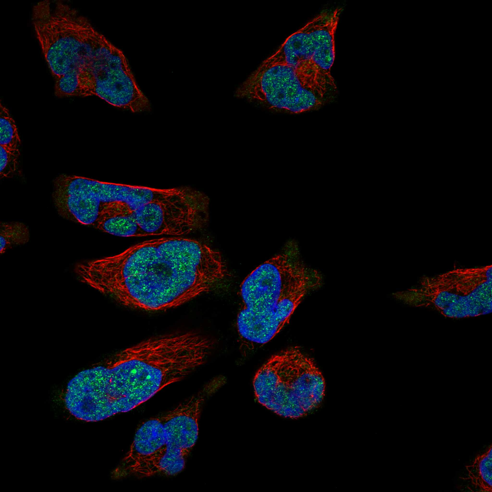
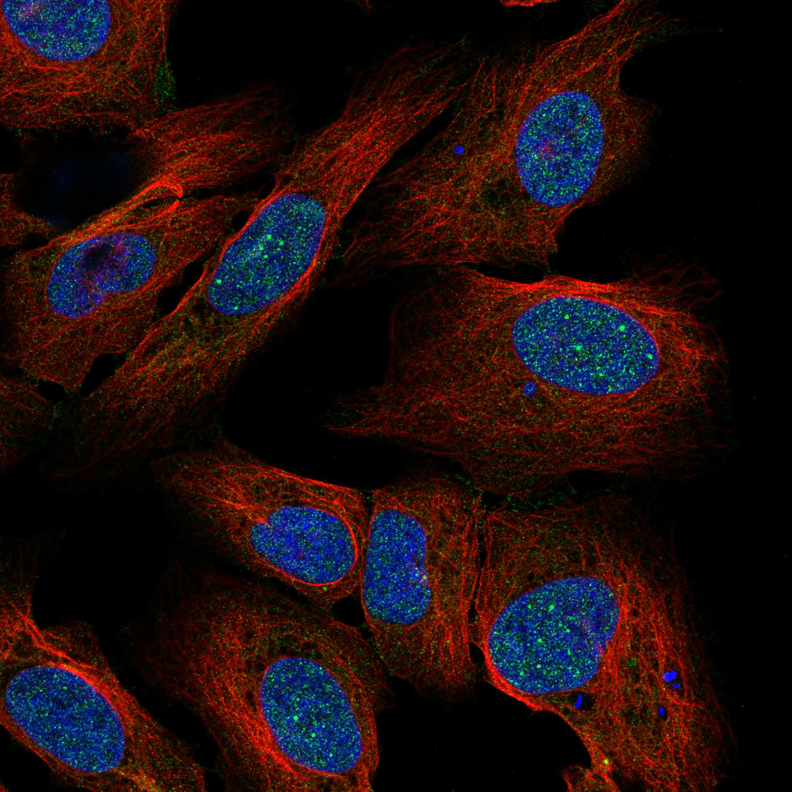
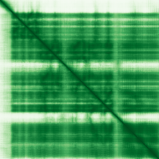

type: protein-evaluation gene: "EXOSC2" date: 2026-06-03 tags: [protein-scout, nuclear-protein, evaluation] status: scored ---
EXOSC2 核蛋白评估报告 (Full Re-evaluation)
1. 基本信息
| 项目 | 内容 |
|---|---|
| 基因名 / 别名 | EXOSC2 / RRP4 |
| 蛋白名称 | Exosome complex component RRP4 |
| 蛋白大小 | 293 aa / 32.8 kDa |
| UniProt ID | Q13868 |
| 评估日期 | 2026-06-03 |
IF 图像:  
2. 评分总览
| 维度 | 得分 | 满分 | 加权后 | 关键证据摘要 |
|---|---|---|---|---|
| 核定位特异性 | 7/10 | ×4 | 28 | HPA: Nucleoplasm, Nucleoli; UniProt: Cytoplasm; Nucleus, nucleolus; Nucleus |
| 蛋白大小 | 10/10 | ×1 | 10 | 293 aa / 32.8 kDa |
| 研究新颖性 | 8/10 | ×5 | 40 | PubMed strict=30 篇 (≤40→8) |
| 三维结构 | 10/10 | ×3 | 30 | AlphaFold v6 pLDDT=81.2; PDB: 2NN6, 6D6Q, 6D6R, 6H25, 9G8M, 9G8N, 9G8O |
| 调控结构域 | 8/10 | ×2 | 16 | InterPro: IPR025721, IPR026699, IPR004088, IPR036612, IPR012 |
| PPI 网络 | 3/10 | ×3 | 9 | STRING 15 partners; IntAct 15 interactions |
| 互证加分 | — | max +3 | 3.0 | PDB+AF+STRING+IntAct cross-validation |
| 原始总分 | 136.0/180 | |||
| 归一化总分 | 75.6/100 |
3. 详细分析
3.1 核定位证据
| 来源 | 定位 | 可信度 |
|---|---|---|
| Protein Atlas (IF) | Nucleoplasm, Nucleoli | Supported |
| UniProt | Cytoplasm; Nucleus, nucleolus; Nucleus | Swiss-Prot/TrEMBL |
IF 图像获取: IF图像已下载并嵌入 (2张)
GO Cellular Component:
- cytoplasm (GO:0005737)
- cytoplasmic exosome (RNase complex) (GO:0000177)
- cytosol (GO:0005829)
- exosome (RNase complex) (GO:0000178)
- nuclear exosome (RNase complex) (GO:0000176)
- nucleolar exosome (RNase complex) (GO:0101019)
- nucleolus (GO:0005730)
- nucleoplasm (GO:0005654)
结论: 主要核定位，HPA 可靠性良好，有辅助数据源支持。
3.2 蛋白大小评估
评价: 大小适中（200-800 aa），适合常规生化实验和结构解析。
3.3 研究现状
| 指标 | 数值 |
|---|---|
| PubMed strict count | 30 |
| PubMed broad count | 41 |
| 别名(未计入scoring) | Aliases observed but not used for scoring: RRP4 |
关键文献: 1. The Human RNA-Binding Proteome and Its Dynamics during Translational Arrest.. *Cell*. PMID: 30528433 2. Low expression of EXOSC2 protects against clinical COVID-19 and impedes SARS-CoV-2 replication.. *Life science alliance*. PMID: 36241425 3. The RNA Exosome and Human Disease.. *Methods in molecular biology (Clifton, N.J.)*. PMID: 31768969 4. Low expression of EXOSC2 protects against clinical COVID-19 and impedes SARS-CoV-2 replication.. *bioRxiv : the preprint server for biology*. PMID: 35291294 5. Genetic and genomic studies of pathogenic EXOSC2 mutations in the newly described disease SHRF implicate the autophagy pathway in disease pathogenesis.. *Human molecular genetics*. PMID: 31628467
评价: 非常新颖，仅有少数基础研究。
3.4 三维结构分析
| 指标 | 数值 |
|---|---|
| AlphaFold 版本 | v6 |
| AlphaFold 平均 pLDDT | 81.2 |
| 高置信度残基 (pLDDT>90) 占比 | 31.4% |
| 置信残基 (pLDDT 70-90) 占比 | 51.2% |
| 中等置信 (pLDDT 50-70) 占比 | 7.5% |
| 低置信 (pLDDT<50) 占比 | 9.9% |
| 有序区域 (pLDDT>70) 占比 | 82.6% |
| 可用 PDB 条目 | 2NN6, 6D6Q, 6D6R, 6H25, 9G8M, 9G8N, 9G8O, 9G8P |
PAE (Predicted Aligned Error): 
评价: PDB实验结构（2NN6, 6D6Q, 6D6R, 6H25, 9G8M, 9G8N, 9G8O, 9G8P）+ AlphaFold极高置信度预测（pLDDT=81.2），结构可信度极高。
3.5 结构域分析
| 来源 | 结构域 |
|---|---|
| InterPro/Pfam | InterPro: IPR025721, IPR026699, IPR004088, IPR036612, IPR012340; Pfam: PF14382, PF15985, PF21266 |
染色质调控潜力分析: 多个已知结构域注释，AlphaFold预测质量高，结构域折叠可信。
3.6 PPI 网络
STRING 预测互作 (combined score >0.4):
| Partner | Combined Score | Experimental | 功能类别 |
|---|---|---|---|
| DIS3 | 0.999 | 0.999 | — |
| EXOSC9 | 0.999 | 0.997 | — |
| EXOSC10 | 0.999 | 0.998 | — |
| EXOSC1 | 0.999 | 0.997 | — |
| C1D | 0.999 | 0.991 | — |
| EXOSC3 | 0.999 | 0.998 | — |
| DIS3L | 0.999 | 0.998 | — |
| EXOSC7 | 0.999 | 0.997 | — |
| EXOSC4 | 0.999 | 0.999 | — |
| EXOSC8 | 0.999 | 0.997 | — |
实验验证互作 (IntAct):
| Partner | 方法 | PMID |
|---|---|---|
| Rrp45 | psi-mi:"MI:0019"(coimmunoprecipitation) | pubmed:12483225 |
| Rrp46 | psi-mi:"MI:0019"(coimmunoprecipitation) | pubmed:12483225 |
| Rrp42 | psi-mi:"MI:0019"(coimmunoprecipitation) | pubmed:12483225 |
| Dis3 | psi-mi:"MI:0019"(coimmunoprecipitation) | pubmed:12483225 |
| Rrp40 | psi-mi:"MI:0019"(coimmunoprecipitation) | pubmed:12483225 |
| Mtr3 | psi-mi:"MI:0019"(coimmunoprecipitation) | pubmed:12483225 |
| Csl4 | psi-mi:"MI:0019"(coimmunoprecipitation) | pubmed:12483225 |
| Rrp47 | psi-mi:"MI:0019"(coimmunoprecipitation) | pubmed:12483225 |
| Ski6 | psi-mi:"MI:0019"(coimmunoprecipitation) | pubmed:12483225 |
| Dmel\CG17982 | psi-mi:"MI:0019"(coimmunoprecipitation) | pubmed:12483225 |
PPI 互证分析:
- STRING + IntAct 均有数据
- STRING partners: 15，IntAct interactions: 15
- 调控相关比例: 0 / 15 = 0%
评价: STRING 15 个预测互作，IntAct 15 个实验互作。调控相关配体占比 0%。
3.7 多库互证
| 维度 | 来源 | 结果 | 是否一致 |
|---|---|---|---|
| 三维结构 | AlphaFold pLDDT=81.2 + PDB: 2NN6, 6D6Q, 6D6R, 6H25, 9G8M, | pLDDT=81.2, v6 | 预测+实验 |
| 定位 | UniProt + HPA | Cytoplasm; Nucleus, nucleolus; Nucleus / Nucleoplasm, Nucleoli | 一致 |
| PPI | STRING + IntAct | 15 + 15 interactions | 数据充分 |
互证加分明细:
- PDB + AlphaFold 双源验证: +0.5
- 多库定位一致 (3源): +0.5
- STRING + IntAct 双源验证: +0.5
- 结构域 + AlphaFold 质量: +0.5
- PDB 多条目覆盖 (≥3): +1.0
总分: +3.0 / max +3
4. 总体评价
推荐等级: ⭐⭐⭐⭐
核心优势: 1. EXOSC2 — Exosome complex component RRP4，非常新颖，仅有少数基础研究。 2. 蛋白大小293 aa，大小适中（200-800 aa），适合常规生化实验和结构解析。
风险/不确定性: 1. PubMed 30 篇，已有一定研究基础 2. 结构数据质量可接受
下一步建议:
- [ ] 查阅最新关键文献补充研究背景
- [ ] 获取 Protein Atlas IF 图像确认亚细胞定位
- [ ] 设计体外实验验证核定位及潜在调控功能
5. 数据来源
- UniProt: https://www.uniprot.org/uniprotkb/Q13868
- Protein Atlas: https://www.proteinatlas.org/ENSG00000130713-EXOSC2/subcellular
- PubMed: https://pubmed.ncbi.nlm.nih.gov/?term=EXOSC2
- AlphaFold: https://alphafold.ebi.ac.uk/entry/Q13868
- STRING: https://string-db.org/network/9606.ENSP00000
- Data fetched live: 2026-06-03
<!-- DOMAIN_HUMANPPI_REPAIR_START -->
Domain/SMART 与 humanPPI 补充（2026-06-06）
SMART / UniProt domain
| Source | Data |
|---|---|
| UniProt | Q13868 |
| SMART | 未在 UniProt xref 中检出 SMART 条目 |
| UniProt Domain [FT] | DOMAIN 79..159; /note="S1 motif" |
| InterPro | IPR025721;IPR026699;IPR004088;IPR036612;IPR012340;IPR048565; |
| Pfam | PF14382;PF15985;PF21266; |
humanPPI / HPA Interaction
Source: https://www.proteinatlas.org/ENSG00000130713-EXOSC2/interaction
| Partner | Datasets | AF3/HPA structure |
|---|---|---|
| DIS3 | Intact, Biogrid | true |
| DIS3L | Biogrid, Bioplex | true |
| EXOSC1 | Intact, Biogrid, Bioplex | true |
| EXOSC3 | Intact, Biogrid, Bioplex | true |
| EXOSC4 | Intact, Biogrid, Bioplex | true |
| EXOSC5 | Biogrid, Bioplex | true |
| EXOSC6 | Biogrid, Bioplex | true |
| EXOSC7 | Intact, Biogrid, Bioplex | true |
<!-- DOMAIN_HUMANPPI_REPAIR_END -->